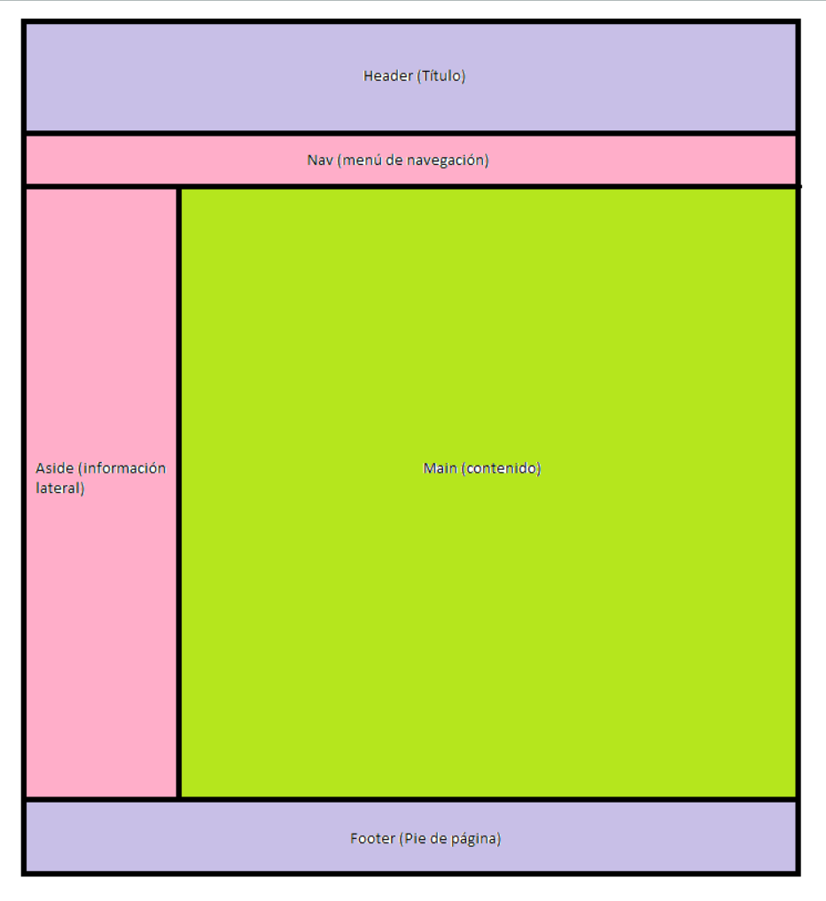

Layout del proyecto

El layout consta de varias partes; un header, en donde está el título del apartado en el que estas, un nav debajo del header, que es el menú de navegación de la página, un aside en el lado izquierdo, que proporciona información personal , un main que ocupa el centro y el lado derecho, donde esta todo el contenido de la página, y abajo del todo se encuentra el footer, que solo tiene un enlace que lleva al github del creador de la pagina información del autor de la página web.
Documentación del proyecto
Enlace de la documentación de la Página Web